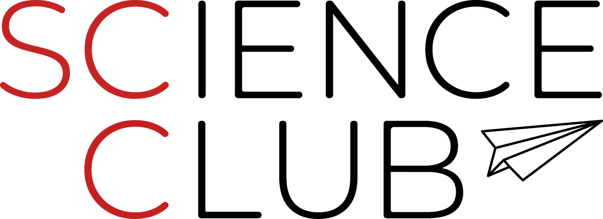
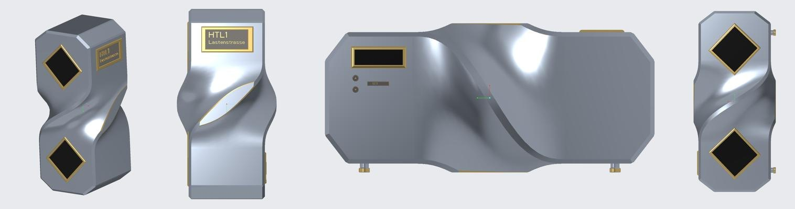

HTL1 Lastenstraße Klagenfurt
Technik machen, nicht nur darüber reden.
Im Science Club entwickeln Schülerinnen und Schüler aus Elektrotechnik, Mechatronik und Maschinenbau echte Produkte und zeigen Mittelschülerinnen und Mittelschülern als Peer-Teacher, wie man sie baut.

TimeFlow
Die digitale Sanduhr: zwei LED-Matrizen, ein Lagesensor und ein Akku im 3D-gedruckten Gehäuse. Als offener Bausatz zum Nachbauen.
Zum Projekt →